Format Sel
Saat kami memformat sel di Excel, kami mengubah tampilan angka tanpa mengubah angka itu sendiri. Kita dapat menerapkan format angka (0.8, $0.80, 80%, dll) atau format lain (perataan, font, batas, dll).
1. Masukkan nilai 0,8 ke dalam sel B2.
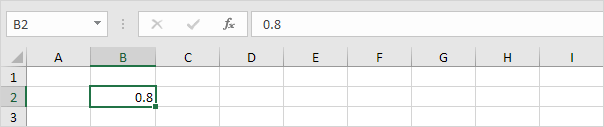
Secara default, Excel menggunakan format Umum (tidak ada format angka tertentu) untuk angka. Untuk menerapkan format angka, gunakan kotak dialog 'Format Sel'.
2. Pilih sel B2.
3. Klik kanan, lalu klik Format Cells (atau tekan Ctrl+1).
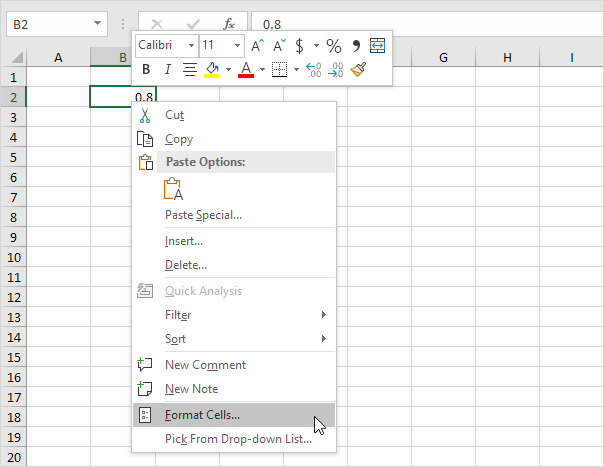
Kotak dialog 'Format Sel' muncul.
4. Misalnya, pilih Mata Uang.
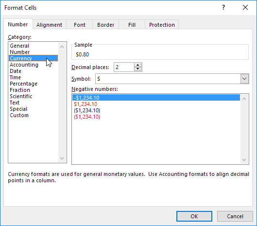
Catatan: Excel memberi Anda pratinjau langsung tentang bagaimana nomor akan diformat (di bawah Contoh).
5. Klik Oke.
Sel B2 masih berisi angka 0.8. Kami hanya mengubah tampilan nomor ini. Perintah pemformatan yang paling sering digunakan tersedia di tab Beranda.
6. Pada tab Beranda, di grup Angka, klik simbol persentase untuk menerapkan format Persentase.

7. Pada tab Home, di grup Alignment, pusatkan angka.

8. Pada tab Home, di grup Font, tambahkan batas luar dan ubah warna font menjadi biru.

Hasil:

Tempat desimal
Pelajari cara menampilkan lebih sedikit tempat desimal di Excel tanpa mengubah angka itu sendiri. Anda juga dapat membulatkan angka.
1. Masukkan nilai 2.175 ke dalam sel A1.

2. Pada tab Beranda, di grup Angka, klik tombol Kurangi Desimal dua kali.

Hasil:
Catatan: jika Anda melihat bilah rumus, Anda dapat melihat bahwa sel A1 masih berisi nilai 2.175.
3. Kita masih dapat menggunakan nilai presisi yang mendasari ini dalam perhitungan.

Catatan: jika Anda ingin menggunakan 2.2 untuk mendapatkan hasil 6.6, bulatkan nilainya di sel A1.
pecahan
Contoh ini mengajarkan Anda cara memasukkan pecahan di Excel dan bagaimana mengubah format pecahan.
1. Untuk memasukkan pecahan campuran 1 4/7 (satu dan empat per tujuh), ketik 1 4/7. Untuk memasukkan pecahan 4/7 (empat per tujuh) ke dalam sel A1, pilih sel A1 dan ketik 0 4/7 (dengan 0 atau Excel mengira Anda ingin memasukkan tanggal).

Sekarang setelah Anda memasukkan pecahan dengan benar, Excel telah menerapkan format Pecahan ke sel A1 dan Anda dapat mengedit pecahan hanya dengan mengetik 5/7 (tanpa 0). Anda dapat menemukan nilai desimal dari pecahan di bilah rumus.
2. Mari kita lihat format Pecahan yang diterapkan. Pilih sel A1, klik kanan, lalu klik Format Sel.
Excel telah menerapkan tipe Hingga satu digit.

Catatan: untuk memasukkan pecahan seperti 4/11 ke dalam sel A1, ubah jenisnya menjadi Hingga dua digit. Untuk memasukkan pecahan seperti 1/148 ke dalam sel A1, ubah jenisnya menjadi Hingga tiga digit.
3a. Excel membulatkan pecahan Anda jika tidak dapat menampilkan pecahan yang tepat. Misalnya, jika Anda mengetik 4/11 ke dalam sel A1 (dengan tipe Hingga satu digit diterapkan), Excel menampilkan 1/3. Bilah rumus selalu menunjukkan nilai desimal yang benar.
3b. Ubah jenisnya menjadi Hingga dua digit.
Catatan: tentu saja, jika Anda mengetik 0 4/11 ke dalam sel baru, Excel secara otomatis menerapkan tipe Hingga dua digit dan menampilkan 4/11 dengan benar.
4. Excel selalu mengurangi pecahan ke penyebut terkecilnya. Jika Anda memasukkan pecahan 2/8, Excel mengonversi pecahan menjadi 1/4. Namun, Anda dapat menggunakan tipe As delapan (4/8) untuk memperbaiki penyebut menjadi 8.

5. Terkadang, Anda tidak dapat menemukan penyebut yang tepat untuk pecahan Anda. Misalnya, Anda ingin menampilkan 40/50, tetapi Excel mengonversi 40/50 menjadi 4/5. Namun, tipe As lima puluh (25/50) tidak tersedia. Buat format angka khusus ( # ??/50 ) untuk memperbaikinya.
Catatan: ubah 50 menjadi 60 untuk membuat tipe As enam puluh (30/60), dll.
Mata Uang vs Akuntansi
format mata uang dan format yang Akuntansi di Excel sangat mirip satu sama lain. Contoh ini menunjukkan perbedaannya.
1. Masukkan nilai berikut.
2. Format Mata Uang menempatkan tanda dolar tepat di sebelah nomor.
3. Format Akuntansi menyelaraskan tanda dolar di tepi kiri sel dan menampilkan tanda hubung untuk nilai nol.
Catatan: Format mata uang dapat menampilkan angka negatif dengan tanda minus, merah, dengan tanda kurung, atau merah dengan tanda kurung. Format Akuntansi menampilkan angka negatif dalam tanda kurung.
Teks ke Angka
Secara default, teks rata kiri dan angka rata kanan. Contoh ini mengajarkan Anda cara mengonversi 'string teks yang mewakili angka' menjadi angka.
1. Pilih rentang A1:A4 dan ubah format angka menjadi Umum.
2. Angka yang diawali dengan apostrof juga diperlakukan sebagai teks. Pilih sel A5 dan hapus apostrof secara manual.
3a. Anda juga dapat menggabungkan langkah 1 dan 2 dengan menambahkan sel kosong ke rentang A1:A5. Dengan melakukan ini, Anda memberi tahu Excel bahwa string teks ini adalah angka. Salin sel kosong.

3b. Pilih rentang A1:A5, klik kanan, lalu klik Tempel Spesial.
3c. Klik Tambahkan.

3d. Klik Oke.
Hasil. Semua angka rata kanan dan diperlakukan sebagai angka.

4a. Anda juga dapat menggunakan fungsi VALUE.

4b. Berikut contoh lain. Gunakan fungsi KANAN (atau fungsi teks lainnya ) untuk mengekstrak karakter dari string teks, lalu gunakan fungsi VALUE untuk mengonversi karakter ini menjadi angka.
Angka ke Teks
Secara default, angka rata kanan dan teks rata kiri. Contoh ini mengajarkan Anda cara mengonversi angka menjadi 'string teks yang mewakili angka'.
1. Pilih rentang A1:A4 dan ubah format angka menjadi Teks.
2. Awali angka dengan tanda kutip dan itu juga akan diperlakukan sebagai teks.
3a. Jika Anda menambahkan teks ke nomor dan masih ingin memformat nomor ini, gunakan fungsi TEXT. Tanpa menggunakan fungsi TEXT, inilah hasilnya.

3b. Dengan fungsi TEKS.
Catatan: #,## digunakan untuk menambahkan koma ke angka besar.
3c. Berikut contoh lain. Terapkan format persentase.

Catatan: gunakan 0 untuk menampilkan nilai integer terdekat. Gunakan 0,0 untuk satu tempat desimal. Gunakan 0,00 untuk dua tempat desimal, dll.
3d. Dan contoh lain. Memformat tanggal.

Catatan: gunakan less/more m's, d's dan y's untuk mengubah tampilan tanggal. Kunjungi halaman kami tentang fungsi TEXT untuk lebih banyak contoh.
Format Nomor Kustom
Memimpin Nol | Tempat Desimal | Tambahkan Teks | Angka Besar | Ulangi Karakter | Warna | Tanggal & Waktu
Excel memiliki banyak format bawaan yang dapat Anda gunakan: Mata Uang, Akuntansi, Tanggal, Waktu, Persentase, dll. Jika Anda tidak dapat menemukan format yang tepat, Anda dapat membuat format angka kustom.
Memimpin Nol
Misalnya, Anda mungkin memiliki kode yang terdiri dari 5 angka. Alih-alih mengetik 00041, cukup ketik 41 dan biarkan Excel menambahkan nol di depan.
1. Masukkan nilai 41 ke dalam sel A1.
2. Pilih sel A1, klik kanan, lalu klik Format Sel.
3. Pilih Kustom.
4. Ketik kode format angka berikut : 00000
5. Klik Oke.

Catatan: Excel memberi Anda pratinjau langsung tentang bagaimana nomor akan diformat (di bawah Contoh).
Hasil:

Catatan: sel A1 masih berisi angka 41. Kami hanya mengubah tampilan angka ini, bukan angka itu sendiri.
Tempat desimal
Anda juga dapat mengontrol jumlah tempat desimal. Gunakan 0 untuk menampilkan nilai integer terdekat. Gunakan 0,0 untuk satu tempat desimal. Gunakan 0,00 untuk dua tempat desimal, dll.
1. Masukkan nilai 839.1274 ke dalam sel A1.
2. Gunakan kode format angka berikut: 0,00

Tambahkan teks
Anda juga dapat menambahkan teks ke nomor Anda. Misalnya, tambahkan "ft".
1. Masukkan nilai 839.1274 ke dalam sel A1.
2. Gunakan kode format angka berikut: 0.0 "ft"

Catatan: ingat, kami hanya mengubah tampilan nomor ini, bukan nomor itu sendiri. Anda masih dapat menggunakan nomor ini dalam perhitungan Anda.
Angka besar
Anda juga dapat mengontrol jumlah besar. Gunakan satu koma (,) untuk menampilkan ribuan dan gunakan dua koma (,,) untuk menampilkan jutaan.
1. Masukkan nilai berikut di sel A1, B1, C1 dan D1: 1000000, 2500000, 81000000 dan 700000.
2. Gunakan kode format angka berikut: 0.0,, "M"

Catatan: kami menggunakan 0,0 untuk satu tempat desimal dan "M" untuk menambahkan huruf M.
Ulangi Karakter
Gunakan tanda bintang (*) diikuti dengan karakter untuk mengisi sel dengan karakter tersebut.
1. Ketik Hi ke sel A1.
2. Gunakan kode format angka berikut: @ *-
Catatan: simbol @ digunakan untuk mendapatkan input teks.
warna
Anda dapat mengontrol angka positif, angka negatif, nilai nol, dan teks secara bersamaan! Setiap bagian dipisahkan dengan titik koma (;) dalam kode format angka Anda.
1. Masukkan nilai berikut di sel A1, B1, C1 dan A2: 5000000, 0, Hi dan -5,89.
2. Gunakan kode format angka berikut: [Hijau]$#,##0_);[Merah]$(#,##0);"nol";[Biru]"Teks:" @

Catatan: #,## digunakan untuk menambahkan koma ke angka besar. Untuk menambahkan spasi, gunakan garis bawah "_" diikuti dengan karakter. Panjang spasi akan menjadi panjang karakter ini. Dalam contoh kami, kami menambahkan tanda kurung ")". Akibatnya, angka positif berbaris dengan benar dengan angka negatif yang diapit tanda kurung. Gunakan dua bagian yang dipisahkan dengan titik koma (;) untuk mengontrol angka positif dan negatif saja. Gunakan tiga bagian yang dipisahkan dengan titik koma (;) untuk mengontrol angka positif, angka negatif, dan nilai nol saja.
Tanggal dan Waktu
Anda juga dapat mengontrol tanggal dan waktu. Gunakan salah satu format Tanggal atau Waktu yang ada sebagai titik awal.
1. Masukkan nilai 42855 ke dalam sel A1.
2. Pilih sel A1, klik kanan, lalu klik Format Sel.
3. Pilih Tanggal dan pilih Tanggal Panjang.
Catatan: Excel memberi Anda pratinjau langsung tentang bagaimana nomor akan diformat (di bawah Contoh).
4. Pilih Kustom.
5. Ubah sedikit kode format angka menjadi: mm/hh/tttt, dddd
6. Klik Oke.

Hasil:

Catatan umum: format angka kustom disimpan dalam buku kerja tempat Anda membuatnya. Jika Anda menyalin nilai dengan format angka kustom ke buku kerja lain, nilai tersebut juga akan tersedia di buku kerja tersebut.
Format Painter
Format Painter adalah salah satu fitur yang paling kurang dimanfaatkan dari Excel. Format Painter menyalin pemformatan dari satu tempat dan menerapkannya ke tempat lain.
1. Misalnya, pilih sel B2 di bawah ini.
2. Pada tab Beranda, dalam grup Clipboard, klik Format Painter.
Garis putus-putus bergerak muncul di sekitar sel B2 dan penunjuk tetikus berubah menjadi plus dan kuas.
3. Pilih sel D2.
Catatan: Format Painter menerapkan format mata uang, warna latar belakang, dan batas sel B2 ke sel D2. Itu menghemat waktu! Alih-alih memilih sel D2, Anda juga bisa memilih rentang sel untuk menerapkan format sel B2 ke rentang sel.
4. Klik dua kali tombol Format Painter untuk menerapkan pemformatan yang sama ke beberapa sel.
Catatan: klik tombol Format Painter lagi (atau tekan Esc) untuk keluar dari mode Format Painter.
Gaya Sel
Memformat sel dengan cepat dengan memilih gaya sel. Anda juga dapat membuat gaya sel Anda sendiri. Memformat rentang sel dengan cepat dengan memilih gaya tabel.
1. Misalnya, pilih sel B2 di bawah ini.
2. Pada tab Beranda, dalam grup Gaya, pilih gaya sel.
Hasil.
Untuk membuat gaya sel Anda sendiri, jalankan langkah-langkah berikut.
3. Pada tab Beranda, di grup Gaya, klik panah kanan bawah.
Di sini Anda dapat menemukan lebih banyak gaya sel.
4. Klik Gaya Sel Baru.
5. Masukkan nama dan klik tombol Format untuk menentukan Format Angka, Perataan, Font, Batas, Isi, dan Perlindungan gaya sel Anda. Cukup hapus centang pada kotak centang jika Anda tidak ingin mengontrol jenis pemformatan ini.
6. Klik Oke.

7. Pada tab Beranda, di grup Gaya, terapkan gaya sel Anda sendiri.
Hasil.
Catatan: klik kanan gaya sel untuk mengubah atau menghapusnya. Mengubah gaya sel memengaruhi semua sel dalam buku kerja yang menggunakan gaya sel tersebut. Ini dapat menghemat banyak waktu. Gaya sel disimpan dalam buku kerja tempat Anda membuatnya. Buka buku kerja baru dan klik Gabungkan Gaya (di bawah Gaya Sel Baru) untuk mengimpor gaya sel (biarkan buku kerja lama dengan gaya sel terbuka).
Bungkus Teks
Bungkus Teks Secara Otomatis | Pemutusan Garis Manual
Bungkus teks di Excel jika Anda ingin menampilkan teks panjang pada beberapa baris dalam satu sel. Bungkus teks secara otomatis atau masukkan jeda baris manual.
Bungkus Teks Secara Otomatis
1. Misalnya, lihat string teks panjang di sel A1 di bawah ini. Sel B1 kosong.
2. Pada tab Beranda, di grup Perataan, klik Bungkus Teks.
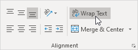
Hasil:
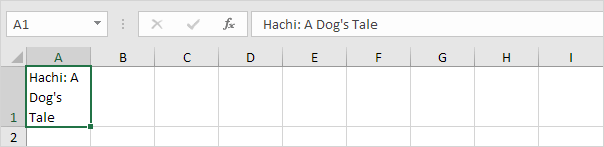
3. Klik pada batas kanan header kolom A dan seret pemisah untuk menambah lebar kolom.

4. Klik dua kali batas bawah header baris 1 untuk menyesuaikan tinggi baris secara otomatis.
Catatan: jika Anda mengatur tinggi baris secara manual (dengan mengklik batas bawah header baris dan menyeret pemisah), Excel tidak mengubah tinggi baris saat Anda mengklik tombol Bungkus Teks. Cukup klik dua kali batas bawah header baris untuk memperbaikinya.
5. Masukkan string teks ekstra panjang di sel B1 dan bungkus teks di sel ini.
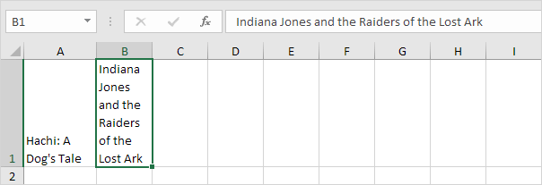
Catatan: secara default, Excel meratakan teks ke bawah (lihat sel A1).
6. Pilih sel A1.
7. Pada tab Home, di grup Alignment, klik Top Align.

Hasil:

Pemutusan Garis Manual
Untuk menyisipkan jeda baris manual, jalankan langkah-langkah berikut.
1. Misalnya, klik dua kali sel A1.
2. Tempatkan kursor Anda di lokasi di mana Anda ingin garis putus.

3. Tekan Alt+Enter.
Hasil:

Catatan: untuk menghapus jeda baris manual, klik dua kali sel, tempatkan kursor Anda di awal baris dan tekan Backspace.
Gabungkan Sel
Halaman ini mengilustrasikan cara menggabungkan sel yang dipilih menjadi satu sel besar. Ini bisa berguna jika Anda ingin memperjelas bahwa label di Excel berlaku untuk beberapa kolom.
Sebelum Anda mulai: fitur ini hanya menyimpan nilai di sel kiri atas dan menghapus semua nilai lainnya. Gunakan fungsi CONCATENATE di Excel untuk menggabungkan (menggabungkan) string.
1. Masukkan label di sel A1.
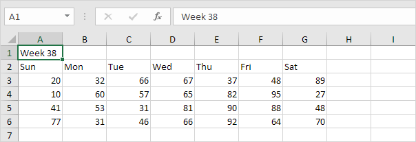
2. Pilih rentang A1:G1.

3. Pada tab Beranda, dalam grup Alignment, klik Merge & Center.

Hasil:

Catatan: pada tab Beranda, di grup Perataan, gunakan 6 tombol perataan untuk mengubah perataan teks dalam sel.
Ingat, Excel hanya menyimpan nilai di sel kiri atas dan menghapus semua nilai lainnya.
1. Misalnya, masukkan label di sel A1, B1 dan C1 dan pilih sel ini.

2. Pada tab Beranda, dalam grup Alignment, klik Merge & Center.
Hasil:

Catatan: pada tab Beranda, dalam grup Perataan, klik Gabungkan & Tengahkan lagi untuk memisahkan sel (sel B1 dan C1 akan kosong). Tekan Ctrl+Z untuk membatalkan tindakan ini.
dicoret
Contoh ini mengajarkan Anda bagaimana menerapkan pemformatan coret di Excel. Anda masih dapat membaca teks dengan efek coret.
1. Misalnya, pilih rentang A2:A4.
2. Klik kanan, lalu klik Format Cells (atau tekan Ctrl+1).
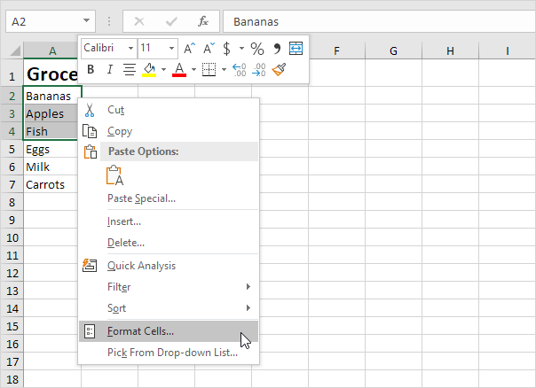
Kotak dialog 'Format Sel' muncul.
3. Pada tab Font, di bawah Efek, klik Coret.
4. Klik Oke.
Hasil:
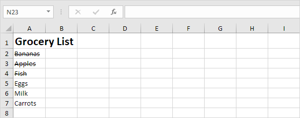
Anda juga dapat menggunakan pintasan keyboard untuk menerapkan pemformatan coret dengan cepat di Excel.
5. Misalnya, pilih sel A7.

6. Tekan Ctrl+5.
Hasil:
Catatan: cukup tekan Ctrl+ <5bd>1 lagi untuk menghilangkan efek coret. Tidak ada opsi coretan ganda di Excel.
7. Untuk menerapkan pemformatan coret hanya pada bagian sel, pertama-tama pilih teks di bilah rumus.
8. Tekan Ctrl+5.
Mari kita lihat 2 cara keren lainnya untuk menerapkan pemformatan coret dengan cepat di Excel.
9. Tambahkan tombol coret ke Bilah Alat Akses Cepat.
10. Pilih sel A5 dan klik tombol coret.

11. Tambahkan baris kode berikut ke BeforeDoubleClick Event :
Target.Font.Strikethrough = Benar
Batal = Benar
12. Klik dua kali sel A6.
Catatan: coba sendiri. Unduh file Excel, gunakan tombol coret atau klik dua kali sel untuk menerapkan pemformatan coretan dengan cepat.
Superskrip dan Subskrip
Sangat mudah untuk memformat karakter sebagai superskrip (sedikit di atas garis dasar) atau subskrip (sedikit di bawah garis dasar) di Excel.
1. Misalnya, klik dua kali sel A1.
2. Pilih nilai 2.
3. Klik kanan, lalu klik Format Cells (atau tekan Ctrl+1).

Kotak dialog 'Format Sel' muncul.
4. Pada tab Font, di bawah Efek, klik Superscript.
5. Klik Oke.
Hasil:
6. Tak perlu dikatakan, efek superskrip tidak dapat mengembalikan hasil. Untuk mengkuadratkan angka, gunakan rumus seperti ini:
Catatan: untuk menyisipkan simbol tanda sisipan ^, tekan Shift+6.
7. Untuk memformat karakter sebagai subskrip (sedikit di bawah garis dasar), ulangi langkah 1-5 tetapi pada langkah 4 klik Subskrip.
Hasil:
8. Tahukah Anda bahwa Anda juga dapat menyisipkan persamaan di Excel? Pada tab Sisipkan, di grup Simbol, klik Persamaan.
Catatan: persamaan di Excel adalah objek mengambang dan tidak mengembalikan hasil.
Tanda cek
Untuk menyisipkan simbol tanda centang di Excel, cukup tekan Shift+P dan gunakan font Wingdings 2. Anda juga dapat menyisipkan kotak centang di Excel.
1. Pilih sel A1 dan tekan Shift+P untuk menyisipkan huruf besar P.
2. Pada tab Home, di grup Font, pilih font Wingdings 2. Untuk menyisipkan tanda centang mewah, ubah warna font menjadi hijau, ubah ukuran font menjadi 12 dan terapkan pemformatan tebal.

3. Pada tab Home, di grup Alignment, gunakan tombol Align untuk memusatkan tanda centang secara horizontal dan vertikal.

Hasil. Tanda centang di Excel.
4. Untuk menyisipkan X merah mewah, tekan Shift+O untuk memasukkan huruf kapital O dan ubah warna font menjadi merah.
5. Sekarang Anda dapat membuat daftar tugas yang bagus yang menggunakan tanda centang. Gunakan Ctrl+C dan Ctrl+V untuk menyalin/menempelkan tanda centang atau X merah.
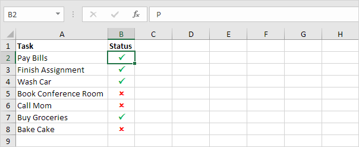
Alih-alih menjalankan langkah 1 dan 2, Anda juga dapat menggunakan tab Sisipkan untuk menyisipkan simbol tanda centang. Di sini Anda dapat menemukan simbol lain juga.
6. Pada tab Sisipkan, di grup Simbol, klik Simbol.
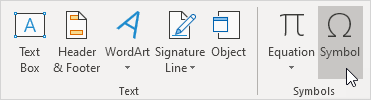
7. Pilih Wingdings 2 dari daftar drop-down, pilih tanda centang dan klik Insert.

Catatan: Anda juga dapat menyisipkan simbol tanda centang dengan kotak di sekitarnya (lihat gambar di atas). Setelah menyisipkan satu tanda centang, Anda dapat menggunakan simbol Baru-baru ini digunakan untuk menyisipkan tanda centang lainnya dengan cepat.